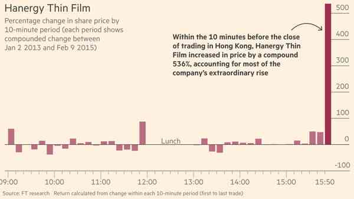
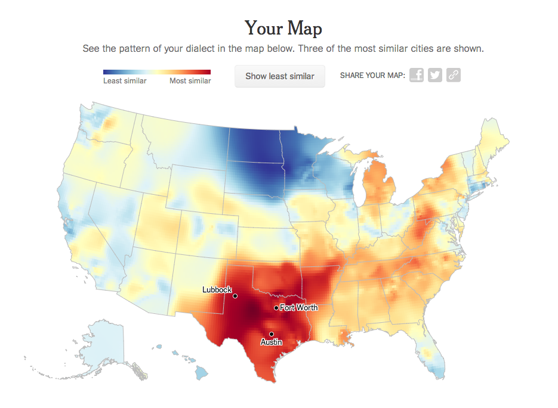

Journalism careers for quants
‘Interactive news’ teams

Source: Rich Gordon, Knight Lab, Northwestern University
‘News app’

Data-driven investigations
Live election results
Responsive multimedia stories
Source: Financial Times
Complex maps

News games
We are not alone
In the UK, similar teams exist at:
- BBC News
- Guardian
- Times
- Buzzfeed
BBC: Most read in 2013
Sources: “The Great British class calculator,” BBC News, April 3, 2013; The Editors blog, April 5, 2013
NYT most read in 2013 ever

Source: “How Y’all, Youse and You Guys Talk”New York Times, December 21, 2013
Academic skills needed
Josh Katz: “I’d enjoyed the news as a consumer … but I’d never really pictured myself as being a part of the journalism world.”
“I’d always had an interest in data visualization and finding a way of communicating results graphically … What I didn’t realize is that that is essentially a lot of what they do at Times graphics, so it was really a perfect fit.”
Source: Ryan Graff, “Behind the dialect map interactive: How an intern created The New York Times’ most popular piece of content in 2013,” Knight Lab, January 20, 2014
‘Precision journalism’
“I sort of see data journalism ... as social science done on deadline.
“We’re using the tools that social scientists have used for years ... [and] applying those tools to journalism problems and using it to help us tell stories with more authority.”
— Steve Doig in “‘Social science done on deadline’: Research chat with ASU’s Steve Doig on data journalism,” Journalists’ Resource, Shorenstein Center, Harvard Kennedy School of Government
‘Precision journalism’
“You have to be like the worst tabloid newspaper in the front and the Academy of Science in the back.”
— Hans Rosling in “Data rock star‘,” Financial Times, January 17, 2014
Big skills shortages
Needed: Students interested in journalism with skills in...
- Web development
- Interaction/UX design
- Statistical analysis
- Data visualisation
- Cartography
What we look for
Are any of these on your CV:
- HTML and CSS
- Javascript and D3
- Node.js/Python/Ruby
- Git
- Excel/R/Stata/SPSS/Matlab
- QGIS/ArcMap
- SQL
... and evidence you have applied them to journalism!
Good news
You may already have these skills!
- Computer science
- Most STEM degrees
- Social science degrees with stats component
- Geography degrees with GIS component
- Design degrees with digital component
- Interactive/computational journalism courses.
You can learn this!
We have degrees in:
- politics
- linguistics
- geography
- philosophy
ft.com/graduates
One place reserved for a specialist digital journalist
Closing date TBC, early January 2016